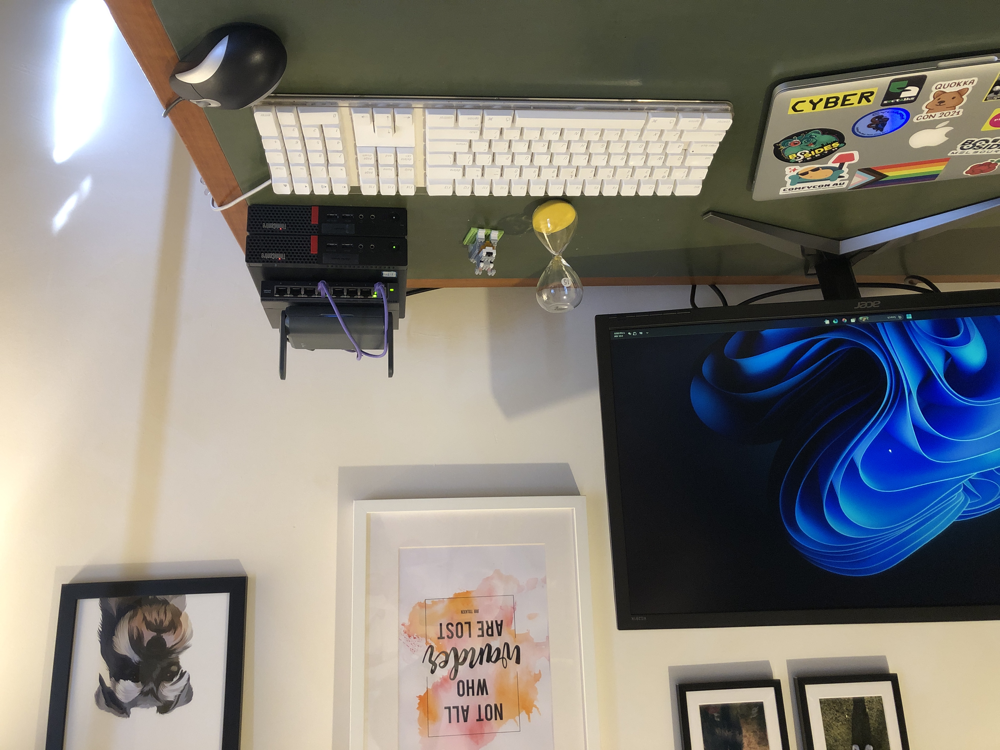

My homelab
My homelab journey
My homelab journey started with virtual machines loaded onto an external hard drive (SanDisk Extreme Portable SSD 1TB). Here I was able to have a play with Kali and a raft of different versions of Windows.
I moved onto a 2017 iMac that had been gifted to me by a family member. I use a neat Apple A1048 keyboard I found from a business that was moving. By using a bootable USB drive I installed Ubuntu. I then used VirtualBox to create virtual machines (VMs). I use the VMs for digging into suspicious SMS. I really like giving life to old tech.
My current set up is a mini lab. I had a clear idea of what I wanted it to look like and what I wanted to achieve - a physically small setup, a space for my lab which was separate from the other devices in the house with VLANs. VLANs are virtual ports that sit on top of the switch’s physical ports. They let you connect devices to separate networks. I used draw.io to mock it up and asked for feedback in the pilar discord group. I got great feedback on how to set up a temporary, low cost lab. Using a travel router to piggy back on my existing ASUS router. I bought a Netgear GS108E 8 port managed switch, two tiny Lenovo M910q desktop PCs and a few CAT 6 ethernet cables.
I have to admit building a homelab stayed on my To Do list for quite a while. It was a bit daunting to get started. What the heck do I start with? How do I use a switch to get VLANs set up? I started with setting up the GL.iNet Slate AX 1800 travel router. I use the repeater method. I also set up VPN through the travel router’s admin panel. Next was the switch. It wasn’t all that scary setting up VLANs. A few YouTube videos, reading and re-reading the Netgear documentation. I configured VLANs on the switch and via LuCl, OpenWrt for the router. Now I have two separate networks to use for my tech playground.
What’s next? I might set up OPNsense and Proxmox. One thing I will need to replace soon is the all-in-one router. I’ll add it to my Black Friday shopping list. The mini lab took about one week to set up. I was determined to get it set up and not get too distracted or despondent when things didn’t come together the first time. It was on my To Do list for too long and needed to just get done. It’s been great to ‘raise the bar’ of my home network. But also get a win to build my confidence with doing something pretty technical.
Tips:
- Take photos and notes along the way
- Getting away from the desk is a great way to mull over other ways to approach a problem
- Start small
11 July 2025
Update 17 July 2025: I dug out a Raspberry Pi 2 and put Pi-hole on it. I have been meaning to set it up for ages. Was a fun little project. The wifi seems a bit sketchy. I might use the Raspberry Pi for something else and set up NextDNS instead.